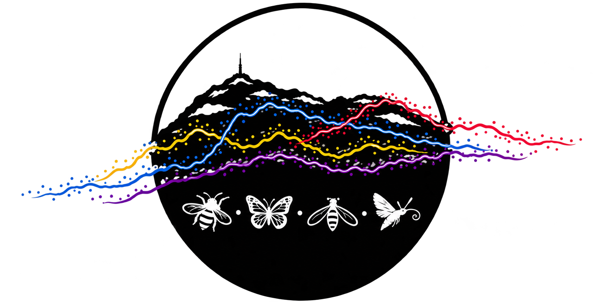

Programme · definitive agenda
Definitive agenda

The programme runs from the welcome on Monday evening through the workshop closing on Thursday afternoon.
Legend. PT = plenary talks (prepared expert presentations); PD = plenary discussion (open discussion, brainstorming and spontaneous reactions); WG = working groups (guided workshops in breakout groups with assigned group leaders).
Arrival Monday · 7 December
18:30
Welcome apéro
19:30
Joint dinner
Day 1 Tuesday · 8 December
08:45–10:00
Session 1 · PT: Welcome and introduction
10:00–10:30
Break
10:30–12:30
Session 2 · PT: Revision and evaluation of assumptions
12:30–13:30
Lunch
13:45–14:30
Session 3 · PD: Synthesis, reactions and questions
14:30–14:45
Coffee break
14:45–17:30
Session 4 · WG: Metrics and modelling approaches
19:30
Joint dinner
Day 2 Wednesday · 9 December
08:45–10:00
Session 5 · PD: Summary and synthesis of Session 4
10:00–10:30
Break
10:30–12:30
Session 6 · WG: Operationalisation
12:30–13:30
Lunch
13:45–17:30
Group activity
19:30
Joint dinner
Day 3 Thursday · 10 December
08:45–10:00
Session 7 · PD: Summary and synthesis of Session 6
10:00–10:30
Break
10:30–12:30
Session 8 · PD: Scalability, uncertainty, limitations and roadmap
12:30–13:30
Lunch
13:30–16:30
Session 9 · PD: Workshop synthesis and open discussion
16:30
Closing